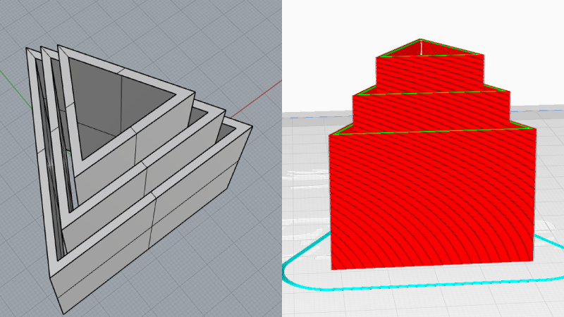
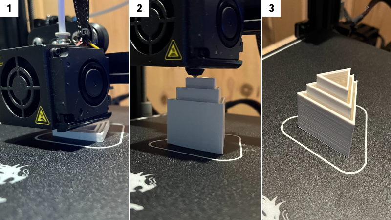

Background
The goal of this assignment is to assemble the 3D printer and conduct test prints with different settings.
Tools
Rhino, Cura, Ender 3D Pro
Process

Assembly
First, I followed the instruction guide and assembled the 3D printer. I also watched YouTube video, which gave me some tips to make this assembly process fo smoothly.
1. Checked if the metal bar is straight
2. Checked if there is no space between each part
3. Tried the "Auto Home" to see it works properly and it didn't work at the beginning. I realized the belt was upside down, which was causing uneven movements.

First Test Print
I tried printing a cube with low quality. I was working fine at the beginning, but later it couldn't hold the shape and started making a spaghetti monster. Thinks that I tried to fix this problems are:
- Slowered the speed from 50 mm to 40 mm
- Adjusted the bed leveling
- Kept the bed temperature higher
2cm Cubes Test Print
I was finally able to print cubes successfully. The low and standard quality took 24 and 26 mins, while super quality took 55 mins to print the same 2cm cubes. I only saw a slight difference between low and standard quality cubes, but the surface of a super quality cube was much smoother than the others.
- Left: low quality and a concentric top
- Middle: standard quality and a concentric top
- Right:super quality and line top
Tubes
The next task was to create a tube 3cm diameter and 3cm high
1. I made a single extrusion wall thickness (0.8mm) with Rhino.
2. I made a double extrusion wall thickness (1.6mm) with Rhino and set random z-seam alignment on Cura, which created this rough surface.
3. The double extrusion wall didn't stick together well - there was a space between the inner and outer layer.
Cylinders
1. A cylinder 2cm in diameter exported with a 0.1mm tolerance (left) and 0.001mm tolerance (right) The one with 0.001mm tolerance looked better quality but there was no big difference between two. (35 mins for both)
2. I found there was a weird space between each layer. Would like to know how we can minimize these unwanted gaps.
3. A cylinder 2cm in diameter with special mode "spiralize outer contour". I don't know if was suppoed to look like this. (17 mins)

Cylinder with support
I also created a cyinder 2cm in diameter printed on its side with supports on. I was able to see where it gets supports on Cura, wasn't sure if the support in the middle was necessary... The quality of cilynder was much better than the first 3 cylinders even though I used the same settings. (1 hour 37 mins)
 Nested Object
Lastly, I printed nested opbjects. The hardest part of it was to create a 3d model with Rhino - it took me a while for me to create a triangle wall but I figured it out by using a command "PlanarSrf" and "ExtrudeSrf." It took 2 hours and 34 mins to print with standard quality.